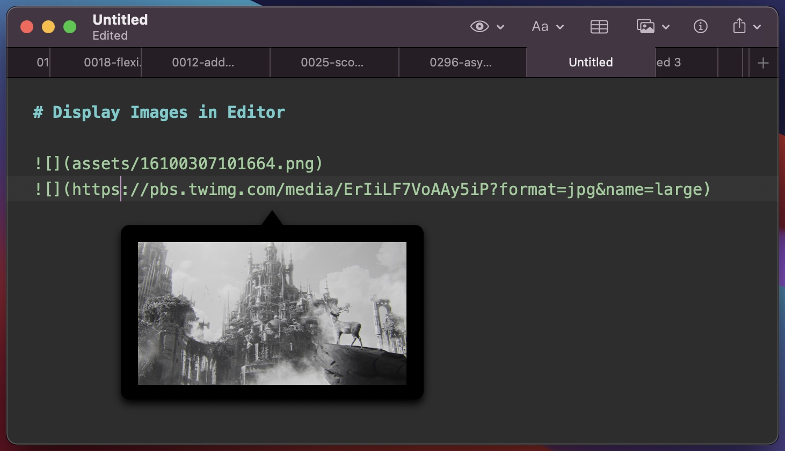
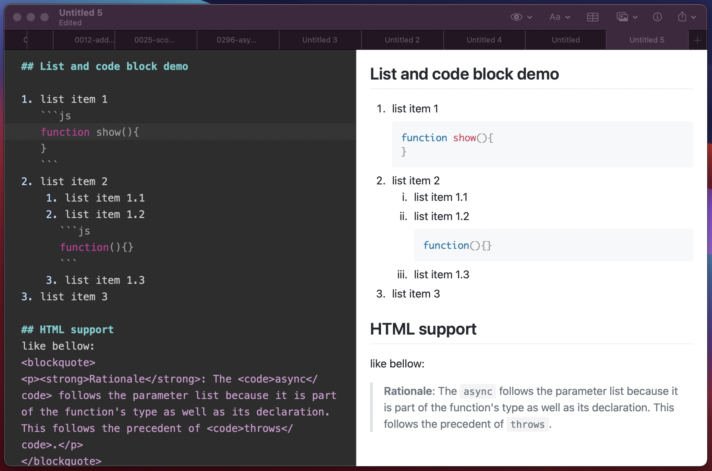
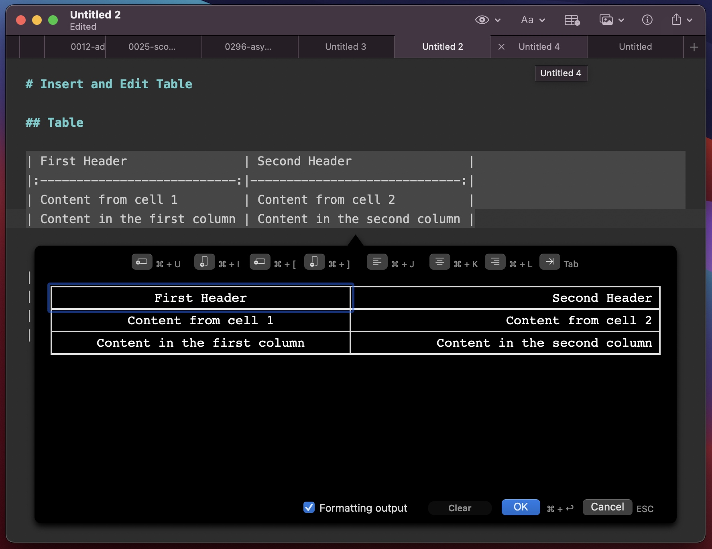
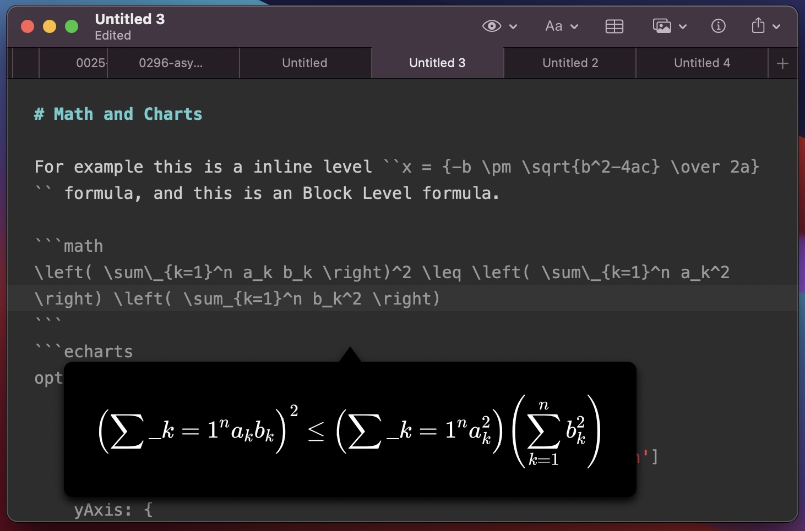
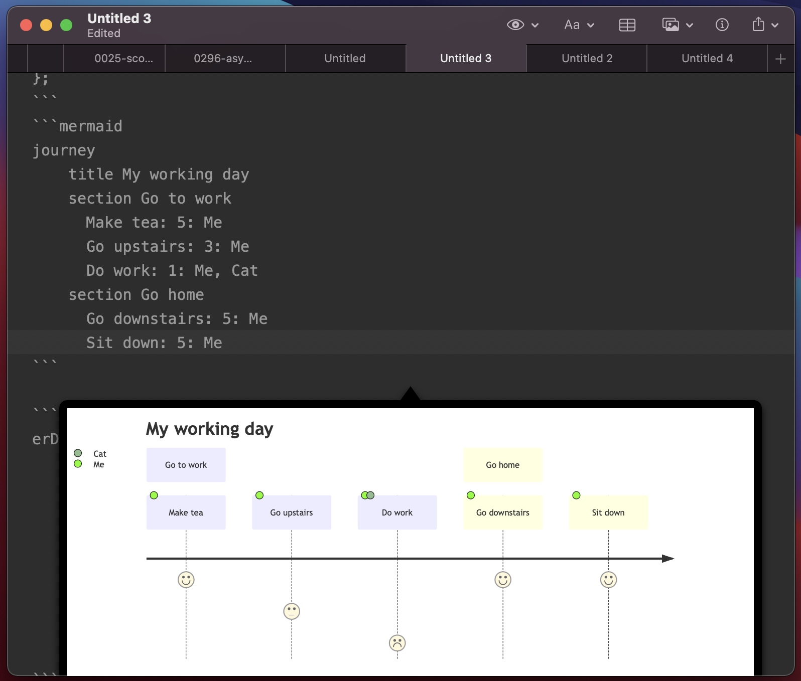
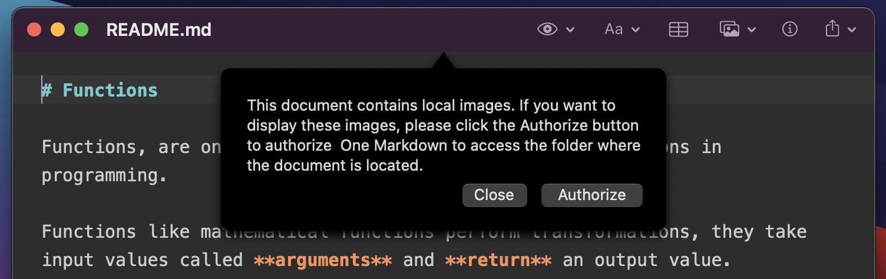
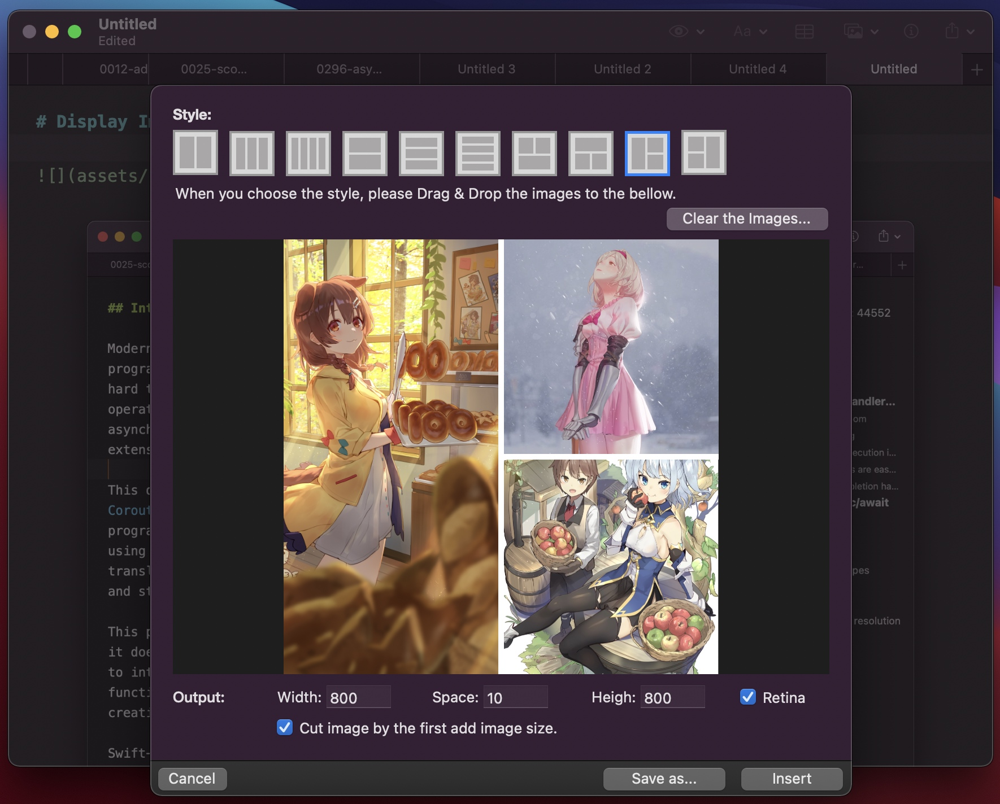

Introduction
One Markdown is a fast and simple, lightweight editor that supports plain text, Markdown and Textbundle. It was born out of MWeb's editor improvement project a year ago and has the following features:
- Fully supports CommonMark standard and GitHub Flavored Markdown (GFM). The current editor of MWeb is a bit different from these two standards. Now One Markdown conforms to these two standards.
- The same basic library is used for syntax highlighting and parsing into HTML, and there will be nice with editing and previewing. After testing, the performance has also been greatly improved, and editing documents with millions of characters is ok.
- In the editing and preview mode, the edited content and the previewed content can now be accurately aligned, and the performance is greatly improved due to the use of WKWebView.
- Supports the display of images in the Editor. The MWeb Editor only display local images. Now One Markdown not only supports local images, but also supports the display of network images, and also supports svg, webP, HEIC and other formats.
- Supports the creation and editing of Textbundle documents.
- Support mathematical formulas, Echarts, mermaid.
Fee model
One Markdown is a free app with in-app purchase, its editor is ready to be integrated into MWeb, so it will not lock any features before integrating into MWeb, so that MWeb users can try and use it. Its fee model is a one-time payment, perpetual use buyout system, and the macOS platform and iOS platform are sold separately. Currently, the macOS version is priced at half price (USD:3.99), and after it is integrated into MWeb, some features will be locked and the original price will be restored (USD:$7.99), and the same for iOS.
I will improve this editor and integrate it into MWeb as soon as possible, so that the lightweight option is One Markdown, and the full-featured and powerful option is MWeb.
Some timeline
- One Markdown for iOS release: about 2 weeks. Update on February 2: The actual release date is January 29, about 20 days later.
- One Markdown's editor complete: a month and a half later. Updated on February 2: The plan has changed, and we will integrate into MWeb first.
- Integration into MWeb: 3 months later, mainly because MWeb itself needs some upgrades, interface, synchronization, etc. This upgrade is free.
Detailed instructions for use
About new documents and unsaved documents
In One Markdown, new documents and unsaved documents with text only can be saved as plain text, Markdown or Textbundle, but unsaved documents with images inserted will automatically become Textbundle documents and cannot be saved as plain text or Markdown document. So if you want to create a new plain text or Markdown document, it is better to save it after creating a new document, and then edit it.
About displaying images in the editor
In One Markdown, there are four options for displaying images in the editor: Show Image in Editor, Show Thumbnail in Editor, Show Image Overlay in Editor, and Hide all Image in Editor, which can be set by clicking the Preview button (eye icon) on the toolbar or in Preferences. If you choose to Show Image Overlay in Editor, the image will be displayed in the floating window when the cursor moves to the picture syntax, and the effect is shown in the figure below. Note that in Preview while editing mode, this floating box will not be displayed.

Better support for code blocks in lists and HTML
Thanks to the CommonMark standard and GFM, One Markdown has better support for writing blocks in lists, and better support for HTML itself, as shown below, something that MWeb's current editor can't do.

Table insertion and editing support
When you tap the "Insert Table" button on the toolbar, the Insert Table helper will be displayed, and if the cursor moves to the table syntax, the Insert Table button will become the "Edit Table" button, as shown below.

If the "Format Output" checkbox is checked, it will generate a neat Markdown table text, but this function does not work well in the Chinese environment because the English characters and Chinese characters are of different widths and cannot be aligned well.
Changes to the mathematical formulas section
MWeb currently uses the $ and $$ symbols for mathematical formulas, this method is no longer supported in One Markdown, and is supported by CommonMark's code block syntax. One Markdown adopts ``inline math `` as the in-line syntax for math formulas and ```math block math ``` as the block syntax for math formulas. Then `code` remains the syntax for in-line code, and ``inline math`` is also in-line code in CommonMark, but is rendered as a math formula in One Markdown. The advantage of this is that when the original markdown document is published to an environment that does not support math formulas, it will be displayed as code, so that the original formula text will be displayed and will not be too distracting to read.
Similarly, One Markdown displays a floating window to aid in the input of mathematical formulas, as shown in the following image.

ECharts and mermaid drawing support
MWeb originally supported ECharts, mermaid, Graphviz, plantuml, etc., but One Markdown currently only supports ECharts and mermaid. The main reason is that Graphviz JS version is no longer maintained, plantuml needs to connect to its online service, and mermaid supports more drawing types, which can meet many needs, so don't worry about the original MWeb, the new editor will continue to support MWeb's original drawing library after it is integrated into MWeb.
One Markdown will also display a floating window for auxiliary input, as follows.

Show local images within Markdown documents
If a plain text or Markdown document opened with One Markdown has references to local images, it will open with the following prompt window.

As the window prompts, by default, One Markdown is unable to read files outside of the document you have open, and you need to authorize One Markdown to read and display these referenced images. Note that currently, only images under the current document are supported, so if the document refers to images in other locations, they will not be displayed.
If you don't want to click Authorize every time, you can go to Preferences and add frequently used folders, so that when you open Markdown documents in those folders, this prompt will no longer be displayed.
Combining multiple images into one
One Markdown also supports this feature, which is already available in MWeb and can be very handy in some cases. To use this feature, click the Insert Image button on the toolbar and select "Mutil Images to One Image..." and you are done, as shown in the following image.

Generate a TOC in Github format
This function can be used by clicking the menu: "Syntax - Generate Github Style TOC", after which a TOC in Github format will be inserted at the cursor position. standard. When integrating into MWeb, an option may be added to disguise support for [TOC] syntax (actually calling this function).
Other features and feedback
The other features are not very important, so I won't explain them all for now, they are all on the menu and toolbar, so try them out if you are interested.
If you have any questions, feel free to contact me using the One Markdown software menu: Help - Send a Feedback...